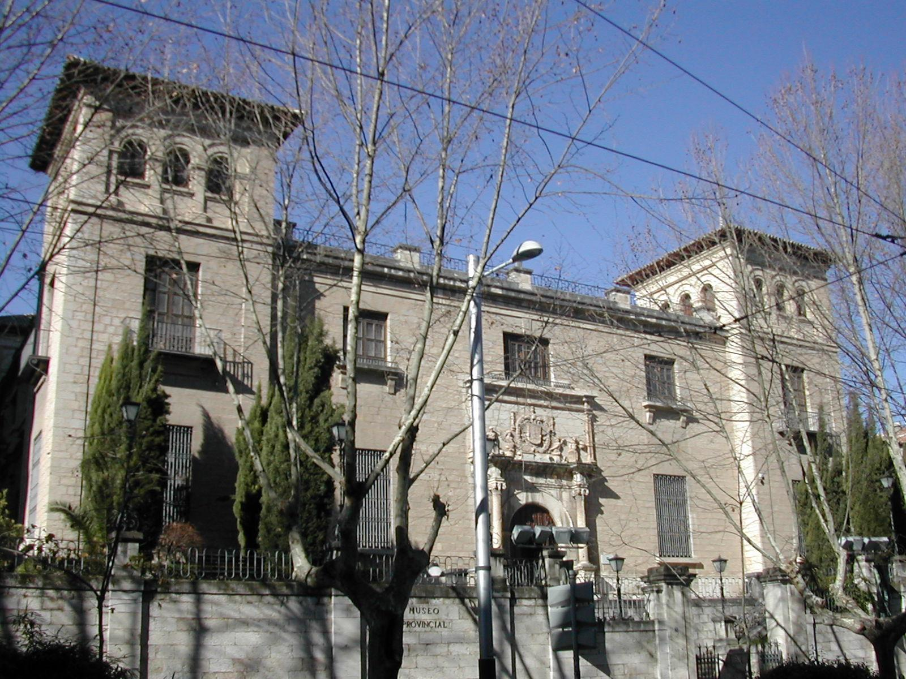
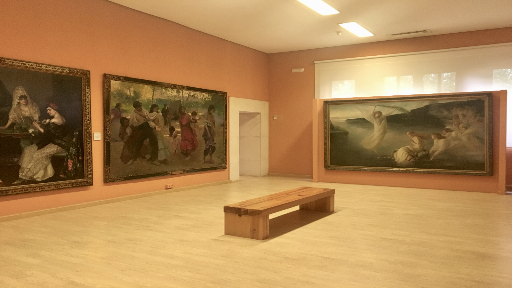

Está compuesto por dos exposiciones permanentes, una de Bellas Artes y otra de Arqueología, albergando también diferentes exposiciones temporales.
El Museo Provincial de Jaén tiene su origen en el Museo de Pintura (1846), con sede en el Convento de la Compañía de Jesús. Las obras que se mostraban en este museo procedían de la desamortización de Mendizábal. En 1914 el museo pasó a denominarse Museo Provincial de Bellas Artes, fijando su sede en el Palacio de la Diputación de Jaén. El director en esa época era Alfredo Cazabán Laguna.
En 1920 el político jiennense José del Prado y Palacio impulsó la construcción de una nueva sede en unos terrenos adquiridos en el Paseo de la Estación; el arquitecto encargado de la obra fue Antonio Flórez Urdapilleta, hijo de Justino Flórez Llamas.
En 1969 el Museo Provincial de Bellas Artes se fusionó con el Museo Arqueológico (fundado en 1963 a instancias del Instituto de Estudios Giennenses de la Diputación Provincial), dando lugar al Museo Provincial de Jaén, de titularidad estatal y gestionado por la Consejería de Cultura de la Junta de Andalucía. Desde ese año la institución se hizo cargo de la conservación y custodia de varias colecciones patrimoniales de la provincia de Jaén.
El edificio principal, obra de Antonio Flórez, se localiza ofreciendo fachada al Paseo de la Estación, situado sobre una plataforma horizontal respecto al nivel de la calle, salvada por dos tramos de escaleras. De tipo regionalista y realizado en sillería de piedra, es de planta cuadrada con tres alturas (planta baja, entreplanta y segunda planta) y con cuatro torreones en sus vértices. El edificio se encuentra exento y rodeado de un pequeño jardín. La fachada principal incorpora la antigua portada del desaparecido Pósito de Labradores, obra de Francisco del Castillo el Viejo (1548); y en el antiguo patio interior (techado en la actualidad) se localiza la portada renacentista de la desaparecida Iglesia de San Miguel, atribuida a Andrés de Vandelvira.
La sección de Arqueología consta de siete salas y dos entreplantas. Se puede hacer un recorrido por la historia de la provincia desde la época prehistórica hasta la era hispanomusulmana a través de las diferentes colecciones de alfarería y metal, esculturas y joyas de estas épocas. Destaca asimismo la colección de mosaicos romanos, una reproducción a escala 1:1 de la cámara sepulcral de Toya, varias lápidas romanas con inscripciones y el sarcófago paleocristiano de Martos.
La sección de Bellas Artes consta de nueve salas: las dos primeras acogen obras del siglo XIII a XVIII, mientras que las restantes están dedicadas a los siglos XIX y XX. Las obras son de diversos estilos pictóricos, prestando especial atención a autores de la provincia de Jaén como Manuel Ángeles Ortiz o el más reciente Manuel Kayser Zapata, que gozan de gran representación. También acoge obras de Fausto Olivares Palacios, José Nogué Massó, Antonio López García, Rafael Zabaleta Fuentes o Federico Madrazo, entre otros autores.
| Precio | |
|---|---|
| Entrada General | 1.5€ |
| Ciudadanos UE y miembros del ICOM | Gratis |
| Horario | |
|---|---|
| Martes a Sábados | 09:00-21:00 |
| Domingos, Festivos y Lunes visperas de festivos | 09:00-15:00 |